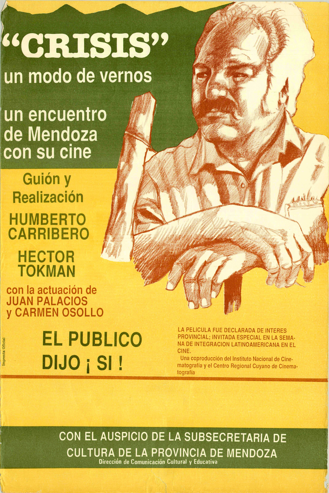
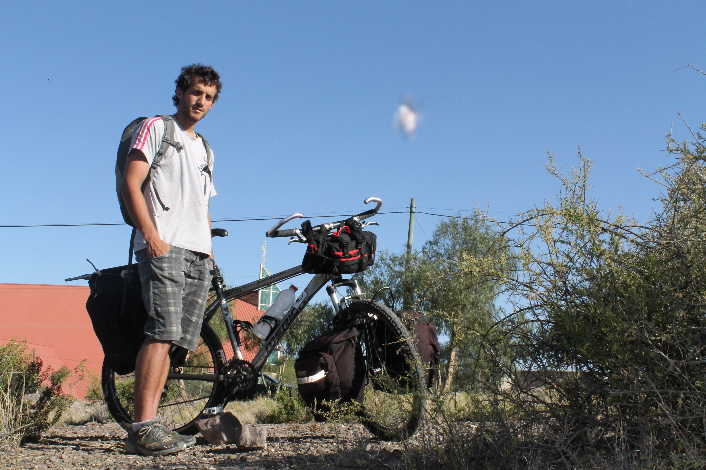
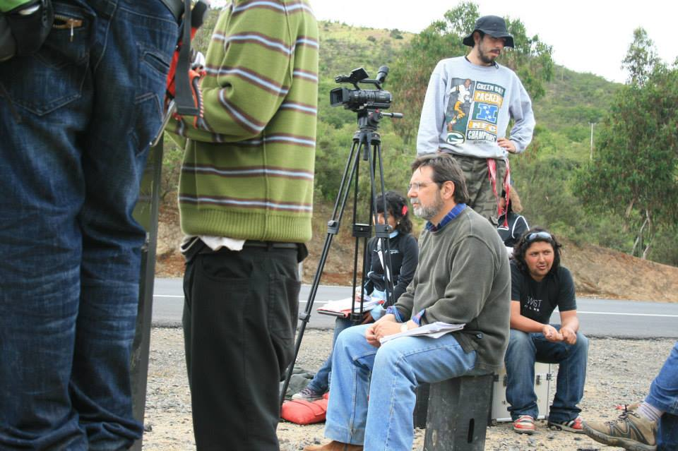
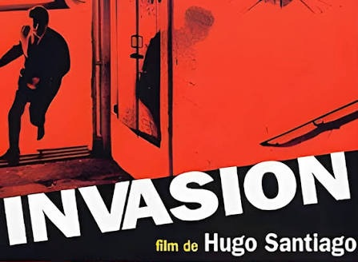

Hay personas que tienen la suerte de saber qué quieren ser en la vida. No fue mi caso. Pero cuando el cine vino hacia mi vida, todo cambió y no tuve dudas de que esa profesión era mi destino. La licenciatura en Cine de la Escuela de Bellas Artes de La Plata fue la primera en Latinoamérica. Allí, con solo trece compañeros, inicié mi recorrido.
Productor Ejecutivo
2010
“El Viaje de Emilio“
Largometraje de ficción – Chile
Dirección: Abril Trejo

Productor Ejecutivo
2007
"Aguas Milagrosas"
Largometraje de ficción - Chile

Coordinador de producciones cinematográficas
2002 - 2011
Más de 200 producciones de cortometrajes realizadas en el ámbito académico. Carrera de Cine, Video y Televisión - Escuela de Comunicación - Universidad del Mar - Chile

Director
1990
"Crisis"
Mediometraje – Mendoza, Argentina
Coproducción con el INCAA

Realizador de publicidad
Director de Fotografía de cortos publicitarios
Asistente de Producción para películas como Invasión, Kuma Ching, La Guita, entre otras
Fotógrafo Profesional
Camarógrafo y realizador de Documentales para Canal 2 de La Plata en 16 mm
Siendo muy joven, cuando estudiaba Biología en Ciencias Exactas, me inscribí en una actividad que hacía la Extensión Universitaria: talleres de alfabetización. Esa experiencia despertó en mí la pasión por la docencia. Comprendí que se aprende mucho más de lo que se enseña. Desde entonces me convertí en el profe, el maestro, un catalizador de proyectos o, desde una visión metafórica de lo que debe ser enseñar, en una enzima, alguien que produce cambios en los otros.
30 AÑOS DE EXPERIENCIA DE DOCENCIA EN EDUCACIÓN SUPERIOR
Docente de Talleres Internacionales
2013 - ACTUALIDAD
Escuela Internacional de Cine y Televisión (EICTV) ∙ San Antonio de los Baños, Cuba
Talleres dictados:
- Laboratorio de Escritura de guion y diseño de producción (2024-2026)
- Escritura y producción de cine de bajo presupuesto (2014-2025)
- Escritura de guion: aprender haciendo (2020-2023)

Docente de Talleres Internacionales – Programa UNESCO Transcultura
2023 - 2024
UNESCO · Escuela Internacional de Cine y Televisión (EICTV) · Modalidad online
Taller dictado:
- Escritura y producción de cine de bajo presupuesto. Aprender haciendo. (dos ediciones)


Docente, Director de área y Evaluador
2012 - 2024
Escuela Regional Cuyo de Cine y Video ∙ Mendoza, Argentina
- Profesor de Semiótica, Cine y Televisión (2012 - 2024)
- Profesor de Producción (2012 - 2014)
- Director del área de Extensión y Relaciones Institucionales
- Disertador y evaluador del Ingreso a la ERCCV

Profesor de Realización Cinematográfica
2012
Universidad de Arte y Ciencias Sociales ∙ Santiago, Chile

Director de la carrera de Cine, Video y Televisión
2002 - 2012
Escuela de Comunicación de la Universidad del Mar
- Docente de los módulos de Integración del plan de estudios correspondiente a 1º y 2º año, que contempla todas las áreas del Lenguaje Audiovisual a los efectos de la formación de Equipos de Rodaje (2002 - 2012)
- Par evaluador del Consejo Nacional de Acreditación , en el marco de las Carreras Audiovisuales (2010)
- Largometrajes finalizados, “Aguas Milagrosas“ y “El Viaje de Emilio” con diversos premios logrados es la culminación de un proceso pautado desde el Plan de Estudios (2008 - 2010)

Cofundador, docente y coordinador académico
1990 - 1992
Escuela Regional Cuyo de Cine y Video ∙ Mendoza, Argentina
- Cofundador de la institución (1990)
- Docente y coordinador de proyectos académicos (1990 - 1992)
Un guionista es un cineasta que escribe. En ese sentido, mientras trabajaba en cine, me di cuenta del valor que tenía imaginar y escribir mis propias historias. Así fue como descubrí el sentido de las ideas, su tratamiento en el marco de los personajes con sus conflictos, las estructuras y esos finales que brotan de uno mismo.
Guiones propios
“El equilibrista”
Largometraje
Cuando un honesto y rutinario gerente bancario sufre el secuestro extorsivo de su esposa para ejecutar un desfalco millonario desde su propia terminal, decide ocultar el delito e investigar por su cuenta para limpiar su nombre; pero a medida que destapa una red de corrupción política, mediática y sindical, abandona su ética original para pactar con los verdaderos culpables y ocupar la cima del poder, perdiendo en el camino a su familia.
“El ciclista”
Serie de 8 capítulos
Tras sufrir un traumatismo cerebral que lo deja en estado vegetativo en terapia intensiva, Manuel (24) emprende un viaje interior desde el silencio de su cuerpo inmóvil mientras su madre lucha por sostenerlo con vida, obligándolo a confrontar los fantasmas y tristezas de su pasado para decidir si existe una luz hacia la cual regresar.

“Juan Cruz”
Largometraje
Un adolescente que nació con sus manos contraídas y dificultad para caminar sueña con convertirse en artista tatuador; cuando en las vacaciones de invierno conoce a una chica con la que nace una fascinación mutua, decide desafiar sus propios límites físicos y sociales para hacer realidad su vocación.
“La noche del lobo”
Largometraje
En la Mendoza de mediados de los años 70, cuando el diario vespertino El Andino desata una psicosis colectiva con sus crónicas diarias sobre seres sobrenaturales que acechan la ciudad, un periodista local envuelto en la cobertura descubre que detrás del miedo popular se esconde una amenaza mucho más real y peligrosa.
Guiones por encargo
“The Border Baby”
Serie de 2 temporadas de 10 capítulos c/u (2026)
En una ciudad de Estados Unidos, diferentes historias enlazadas por el destino, en el marco del crimen organizado, las relaciones familiares y sus vínculos con el Estado, hacen emerger la ruta de los ilegales y los macabros negocios en torno a la subrogación de vientres.

“The Border Baby”
Largometraje
En una ciudad de Estados Unidos, una pareja vive el drama de no poder tener hijos. Ante el conflicto entre la adopción, el alquiler de vientres o la resignación, acuden a una agencia especializada en gestación subrogada que ofrece los servicios de una muchacha mexicana indocumentada, desencadenando consecuencias que revelan oscuros secretos y conducen a una tragedia enlazada con el crimen organizado.
“The Border Baby 2”
Largometraje
Una viuda y una podcaster cruzan Estados Unidos “fuera del radar” para rescatar en México al bebé subrogado que ella había gestado junto a su esposo asesinado, destapando así una red de tráfico de órganos y armas liderada por un poderoso político.
“El chulavita somnoliento”
Largometraje
Un implacable líder “chulavita” paramilitar ultraconservador resucita por error en la violenta Bogotá del año 1989, donde es acogido por recicladores de izquierda y debe confrontar los fantasmas de su pasado mientras su propio hijo lidera ahora la nueva ola paramilitar.
“El hipopótamo de Guayas”
Largometraje
En el Guayaquil de 1938, un obstinado constructor e inventor ecuatoriano desafía la burla popular y el abandono estatal para diseñar, financiar, construir y tripular el primer submarino de Latinoamérica, arriesgando su vida en las peligrosas aguas del río Guayas.
“Habemus Papa”
Largometraje
En la Colombia de 1939, un exseminarista y dentista del pueblo, convencido de tener un llamado divino, transforma su consultorio en un “Vaticano” y se autoproclama Papa, desatando la furia del clero local mientras reparte el oro de los dientes extraídos entre los pobres.
“Música es”
Largometraje ∙ Biopic de la cantante Martha Heredia
Tras conquistar los escenarios internacionales con un talento descomunal, una joven promesa musical queda atrapada entre el control asfixiante de su entorno y las garras del mundo del narcotráfico, encontrando en una celda de prisión el único lugar donde reconstruir su verdad.
Co-guionista
“El pacto”
Largometraje ∙ Con Norma López
Cuando la Muerte se presenta para llevársela en dos días, una anciana coqueta y rebelde la invita a tomar vino y a pasear por la montaña para enseñarle el valor de estar viva. Tras ganarse una prórroga vital, deberá escapar del manicomio en el que intentan encerrarla su codicioso hijo y su nuera, defendiendo su casa y convirtiéndola en un jardín de infantes mientras sus verdugos envejecen en el geriátrico que planearon para ella.
“La ruta de la fortuna”
Largometraje ∙ Con Norma López
Cuando un veterano director de orquesta de 85 años al que buscan jubilar recibe una orden de expropiación para demoler la casa de su infancia y un viejo naranjo que guarda la memoria de su difunta esposa —para abrir paso a una autopista hacia un casino—, regresa a su pueblo a bordo de una casa rodante y, tras ser derrotado en la justicia por un intendente corrupto, convoca a los vecinos y a su orquesta alrededor del árbol para enfrentar las topadoras a pura música.
“Garabato”
Largometraje ∙ Con Norma López
Harto de las humillaciones de su tiránico jefe, un gris empleado de un cementerio renuncia para escribir una novela, pero pronto termina desalojado, sin manuscrito y viviendo bajo un puente. Allí, sus propios personajes de ficción cobran vida para exigirle un mejor argumento, obligándolo a pactar con su antiguo jefe para terminar el libro y descubrir, tras perder un certamen literario, que la verdadera libertad reside en el acto de crear.
“El Canto del Jilguero”
Largometraje ∙ Con Sonia Expósito
En un pequeño pueblo andaluz, una madre se enfrenta a la comunidad cuando queda libre el violador de su hija.
“F App”
Largometraje ∙ Con Sonia Expósito
En un Madrid caótico e injusto, un psicólogo en plena ruptura familiar investiga la desaparición de su mujer dentro de una organización de familias ficticias.
“Adán y Eva”
Largometraje ∙ Con Louis Setton
En una ciudad distópica vigilada por la IA, un limpiacristales mudo huye al desierto tras un terremoto y descubre el amor junto a una pintora que despierta su memoria; pero al ser capturado y devuelto a su andamio previo a la catástrofe, deberá romper su silencio para salvarla antes del derrumbe.
“Ernesto”
Largometraje ∙ Con Louis Setton
Tras años de guerra y cárcel, un experto en explosivos de las FARC intenta reconstruir su vida en una Bogotá hostil mientras rastrea a su pareja desaparecida y a un hijo que nunca conoció.
“Garden City”
Largometraje ∙ Con Louis Setton
Un anciano judío en El Cairo, enfrentado a la inminente demolición del cementerio donde yacen sus padres, debe reconectarse con su hermano ortodoxo de Colombia y su joven nieta rebelde para una última y desesperada lucha por preservar la memoria familiar contra el implacable avance del progreso.
“Y se hizo la luz”
Largometraje ∙ Con Louis Setton
En 1920, un joven maestro parisino da sus primeras clases en un pequeño pueblo de Bretaña. Cuando sus principios republicanos chocan con la cultura local, un niño no vidente fuera de lo común le abre los ojos ante sus propias ataduras.
“La memoria en latas”
Largometraje ∙ Con Louis Setton
En la monótona rutina de un geriátrico parisino, un anciano sudanés con Alzheimer lucha por reconstruir su identidad cuando unas viejas latas de cine guardan recuerdos cruciales de su pasado en guerra y se convierten en su única esperanza para vencer al olvido.
“Tres mujeres”
Largometraje ∙ Con Louis Setton
Una joven subestimada en su trabajo de continuista en la industria del cine y nieta de una abuela cineasta hereda un guion inconcluso sobre la amistad de tres mujeres en la Marsella de los años 60. Al rastrear a la única sobreviviente para tratar de escribir ese final, destapa un secreto culposo de la guerra de Argelia que la obliga a reclamar su propia voz y filmar su película.
“Los abedules de Beryoza”
Largometraje ∙ Con Anastasia Nathalie Oleinik
En un pueblo campesino de Ucrania a comienzos de los años 30, un niño encuentra refugio en un bosque de abedules mientras el mundo de su familia desaparece con la llegada de la colectivización.
“La nota”
Largometraje ∙ Con Vanessa Castellanos
Para escalar en un noticiero sensacionalista de la Ciudad de México, una productora traiciona en vivo la confianza de las trabajadoras sexuales de un refugio. Tras recibir una golpiza, caer en coma y ser desechada por el canal, la muerte de la líder a la que expuso la lleva a dejar el periodismo para sumarse a la protesta en las calles.
“Pajarito”
Largometraje ∙ Con Sol Capasso
Una niña de seis años viaja con sus padres desde Italia a la Argentina para pasar las navidades con su familia paterna, enfrentándose a las tensiones de una familia disfuncional y las dificultades económicas. A través de su mirada inocente descubrirá secretos ocultos y las complejas dinámicas de los adultos, encontrando el coraje necesario para empezar a comprender su propia identidad.
“Hispania”
Largometraje ∙ Con Gabriel Cabra
Mientras un agricultor se sumerge en el sueño de recuperar su identidad, su solitario vecino se convierte en el brazo ejecutor de ese deseo cuando una inundación arrastra hasta la puerta un ataúd anónimo, un hallazgo que lo obliga a limpiar los restos del hombre que ambos comparten y a descifrar el origen de un cuadro oculto entre los huesos.
“First Generation”
Largometraje ∙ Con Azael Bueno
Atrapado entre la promesa del sueño americano y la deportación de su madre a México por indocumentada, un joven de primera generación abandona su beca universitaria para trabajar en la construcción y pagarle un cruce ilegal por el desierto; pero tras un desenlace trágico en la frontera, deberá superar el duelo y la culpa para reclamar el lugar en el mundo por el que ella dio su vida.
“Perro azul”
Largometraje ∙ Con Luis Armando Sosa Gil
Mientras el matrimonio de sus padres se desmorona en silencio y la violencia patrulla las calles de su pueblo, Iván, un niño de diez años que percibe el mundo con otros colores, comienza a experimentar una atracción prohibida hacia los muchachos mayores y a sospechar que su padre carga con el mismo secreto.
“Motores nocturnos”
Largometraje ∙ Con Luis Armando Sosa Gil
En el puerto industrial y violento de Lázaro Cárdenas, un adolescente solitario obsesionado con reparar la moto de su padre ausente comienza a experimentar una atracción prohibida hacia su mejor amigo, mientras lucha por resistirse a los planes de su madre controladora, quien pretende desarraigarlo hacia Estados Unidos mediante trámites fraudulentos.
Asesorías
A lo largo de más de tres décadas de docencia y consultoría internacional —en instituciones como la EICTV (Cuba), la Escuela de Cine de Mendoza y laboratorios independientes— he acompañado el desarrollo de más de un centenar de largometrajes y series de ficción y documental en toda Iberoamérica.
Reconocimiento: Pionero del Cine en Mendoza
2019
Festival Provincial de Cine Mirada Oeste ∙ Mendoza, Argentina
Jurado invitado
2019
FEDOCHI ∙ Chiloé, Chile
Invitado: Taller de Producción de Cine de Bajo Presupuesto
noviembre 2017
Encuentro Internacional de Producción y Gestión Audiovisual ∙ Valparaíso, Chile
Invitado: Taller de Producción de Cine de Bajo Presupuesto
noviembre 2017
Universidad Agustiniana, Cine y Televisión, "Gajes del Oficio" ∙ Bogotá, Colombia
Disertador
2014 - 2017
Ingreso ERCCV (Área Narrativa Audiovisual) ∙ Mendoza, Argentina
Jurado de Ficción
2016
Festival Mirada Oeste ∙ Mendoza, Argentina
Presidente del jurado
2014
Festival de Cine Miradas Cortos 7 ∙ Entre Ríos, Argentina
Jurado
2014
Festival de Cine de Cortos de Godoy Cruz ∙ Mendoza, Argentina
Curador de la Competencia Internacional
2014
Festival Internacional de Cine Mendoza Proyecta ∙ Mendoza, Argentina
Disertador
2013 - 2014
Fundación Universitas, FUJAP (Jornadas de Actualización Docente) ∙ Mendoza, Argentina
Presidente del jurado
2013
VIII Festival de Cine Provincia 2013, Concurso Nacional de Cortometrajes de Ficción ∙ Colombia
Invitado especial
16 al 27 de septiembre de 2013
Taller "Herramientas de producción y lenguaje audiovisual", Universidad del Tolima, Semana de la Comunicación ∙ Colombia
Jurado
2012
MENDOC 2012, Concurso de Guiones de Cortometrajes de Ficción ∙ Mendoza, Argentina
Evaluador
2011
CNCA (Consejo Nacional de la Cultura y las Artes) ∙ Chile
Jurado
2010
FICIANT 2010 ∙ Chile
Coordinador y disertador del Área Académica de la Universidad del Mar
2007 - 2010
Festival Internacional de Cine de Viña del Mar ∙ Chile
Consejo asesor
2007 - 2010
Festival Internacional de Cine de Viña del Mar ∙ Chile
Ejecutor principal
2008 - 2009
Consejo Nacional de Televisión ∙ Chile
Ejecutor principal
2006 - 2010
Consejo Nacional de la Cultura y las Artes ∙ Chile
Jurado
2005
Festival de Cine de Viña del Mar ∙ Chile
Jurado
2004
Festival de Cine de Valparaíso ∙ Chile
Jurado
2003
Festival de Cine de Ovalle ∙ Chile
"Hector Tokman: el argentino que hace cine, enseñando sobre cine de bajo presupuesto"
2020
TVN Panamá

"“Invasión”: a 50 años, las palabras de Hector Tokman"
2019
Los Andes

"Cuidado con el Perro | Temporada 2 | Capítulo 141 - Hector Tokman"
2016
Señal U

Si te interesa saber más sobre mis talleres, trabajos o simplemente quieres ponerte en contacto, puedes escribirme a través de los siguientes canales: